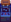

Talk:Soundtrack
| This talk page is for discussing Soundtrack. | |
|---|---|
|
|
Checklist
I did check:
- Most locations (hopefully all) during most weather/season, and sometimes I did check the time conditions
- Most Festivals (except Night Market, infos were there already)
- Every Movies
- Those checks were in-game, not in the game code, so I may have missed some things
I took what was on the page / other pages, without double check for:
- Heart-events
- Junimo Kart and Prairie King
Also:
- I was unable to trigger Country Shop at Pierre's General Store so I considered it was written by mistake and removed it (correct me if I'm wrong).
- On Pierre's page, there is no Ten-Hearts event. It may be missing from the Pierre's page, so I didn't remove it from the table.
- I didn't find any reference in the Wiki to Morris' 50% discount cutscene (at Pierre's), but assisted to it myself (I'm not sure what are the conditions to trigger it).
What I didn't check:
- I didn't check The Summit at all, nor its event.
- I didn't check every cutscene, this includes:
- Story Quests cutscenes
- Special Orders cutscenes
- Every Leo's heart-events
- Maybe:
- Maybe I forgot something? I didn't re-check every NPCs' events.
-- Charly (talk) 21:39, 30 October 2021 (UTC)
Update and Technical indications
So I checked every event in the game code, from each file in unpacked Content/Data/Events, with the help of Modding:Event data and the music spreadsheet (referenced on Modding:Index). It doesn't include 1.5 soundtrack, so I checked the 1.5 music files names included in Wave Bank.xwb, using FooBar2000 and VGMStream as indicated on Modding:Audio.
Every event of the checklist I made above is now checked (and also a few others). I hope I did not forget anything. It seems there is no Pierre's Ten-Hearts Event, only a Six-Hearts Event, with the soundtrack previously indicated corresponding.
Music soundtracks may be used in other areas of the game code. For instance, they are sometimes used in .tmx (when unpacked) files from Content/Maps, but that's not all (for instance code for soundtracks in the Mines is directly on the .exe source code; Leah's cottage soundtrack does not appear in the corresponding Maps file either).
-- Charly (talk) 20:13, 10 November 2021 (UTC)
Formatting of the List Table
The current formatting of the table is the best compromise I came to after several testing. Some remarks:
- I removed Weather and Season conditions for one-shot events. I felt it was confusing to mix up one-shot events and persistent environment. Technically, we could add Weather, Season and Time condition for every single event (and with one line per event, one then could sort the table to have a list grouped per villager).
- I find the use of hearts icons quite telling for hearts event, but it could be discussed.
- I used  and for those two mini-games. I'm not very satisfied since they look a bit too small to be easily identified, but I still think it's better than nothing.
- I didn't use any icon for some location neither for festivals, since there are no "official" icons for these, but it could be completed. -- Charly (talk) 21:39, 30 October 2021 (UTC)
- I used icons for Special Order completion cutscenes also, as they are a specific type of event related to a specific villager -- Charly (talk) 20:25, 10 November 2021 (UTC)
Soundtrack in the Mines
Mines' music mechanisms could be further investigated. I was unable to get every music (even less on each level), but it seems to be coherent with the game code (based on Locations/MineShaft.cs:getMineSong (2933-2944) and Utility.cs:farmerHeardSong (3355-3403)).
I noticed the music triggers everytimes when reaching the 2nd floor in the Mines, and stop when reaching the 11th.
Here are some code excerpts from the decompiled game code, in Locations/MineShaft.cs, that I'm too tired to decipher precisely right now (I don't get why it would stop when reaching level 11, I may be missing something).
// line 80
public static int timeSinceLastMusic = 200000;
// line 2978
protected override void resetLocalState()
{
(...)
// line 3148
if (mineLevel > 1 && (mineLevel == 2 || (mineLevel % 5 != 0 && timeSinceLastMusic > 150000 && Game1.random.NextDouble() < 0.5)))
{
playMineSong();
}
}
// line 2968
public void playMineSong()
{
string mineSong = getMineSong();
if ((Game1.getMusicTrackName() == "none" || Game1.isMusicContextActiveButNotPlaying() || Game1.getMusicTrackName().Contains("Ambient")) && !isDarkArea() && mineLevel != 77377)
{
Game1.changeMusicTrack(mineSong);
timeSinceLastMusic = 0;
}
}
// line 2900
public override void checkForMusic(GameTime time)
{
(...)
// line 2925
if (Game1.getMusicTrackName() == "none" || Game1.isMusicContextActiveButNotPlaying() || (Game1.getMusicTrackName().EndsWith("_Ambient") && Game1.getMusicTrackName() != text))
{
Game1.changeMusicTrack(text);
}
timeSinceLastMusic = Math.Min(335000, timeSinceLastMusic + time.ElapsedGameTime.Milliseconds);
}
-- Charly (talk) 21:39, 30 October 2021 (UTC)
- Edited page with info, removed stub. Basically the part you were missing was the Game1.changeMusicTrack("none") call when getMineArea(mineLevel) != getMineArea(mineLevel - 1), which occurs when transitioning from floor 10 to floor 11, as well as 29 to 30, 39 to 40, and 79 to 80 (or when taking the elevator from one area to another). Squigs44 (talk) 06:27, 7 February 2022 (UTC)
Feedback
- In general, awesome job!
- About the hearts display: it's pretty difficult for me to read the number of hearts as shown. Perhaps
[[File:Abigail Icon.png|24px|link=Abigail]] [[Abigail]] at 2 [[File:HeartIconLarge.png|16px|link=Abigail#Two Hearts]]
- would work and be easier to read, like so: Abigail at 2

— margotbean (talk) 16:12, 31 October 2021 (UTC)
- I also noticed this and thought one could hover on the link to read the number; not very convenient but I was hoping someone else would maybe suggest something else.
- I like your proposal a lot, it looks good, also given the full hearts icons take a lot of space, so I enforced it. I just added a link on the number too (otherwise one could not notice there is a link on the heart icon).
- Thanks!
A song playing on floor 79 upon entry
Since of me playing the game and me going to floor 79 in The Mines and a song started playing made me look suspicious because the wiki page used to say no music will ever play on floor 79, which made me make this change. 9000 (talk) 8:06, 9 August 2022 (UTC)
- This is not what I read from MineShaft::playMineSong(). The check for levels 31-39 and 111-119 is contained within MineShaft::isDarkArea(), which excludes levels 71-79. I've reverted your edit for now. Feel free to correct me if you have proof. - IBugOne (talk) 12:50, 9 August 2022 (UTC)
Luau Response songs
Since of the game playing "Settling In" or "Jaunty" when the Governor tastes the potluck really bugs me because the wiki page does not say it (In the game if the "Best Response" occurs, it plays "Settling In", or "Jaunty" if you made the "Good Response" occur). 9000 (talk) 8:27, 11 August 2022 (UTC)
Boat ride song to Ginger Island
Since of me doing some research of this cutscene, the song that plays during this cutscene is Buttercup Melody, and the wiki page not having it is bugging me because it is just like the songs to the Luau potluck. 9000 (talk) 8:26, 17 September 2022 (UTC)
- I'll be honest, 9000, I have no idea what song plays during the boat ride, nor any other specific event. If you feel it's right, then add it to the page. margotbean (talk) 18:33, 17 September 2022 (UTC)